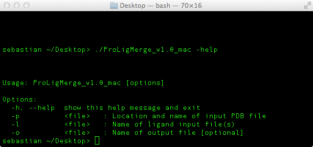

ProLig Merge is a command line is a command line program that let's you merge protein and ligand protein structure files (PDBs).
ProLig Merge takes care of it automatically.
Because
ProLig Merge is a command line tool, it can be easily included in other scripts, which can help you automating your work processes. Run
ProLig Merge with the -h flag to see the options that are available:

Where an example execution could look like this:
Download
ProLig Merge for your operating system:| Mac OS X | v 1.0 |
| Linux | v 1.0 |
| Windows | v 1.0 |